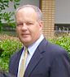

| Dan Bates President and Chief Executive Officer Mr. Bates has spent the past 15 years in the technology sector and has launched successful ventures in both the hardware and software sectors. Mr. Bates' first technology venture, Extreme Audio Reality, E.A.R. was the first provider of multi-channel, interactive audio, designed for the PC and set top-box gaming arena. He also served as CEO and President of an Internet video company providing interactive video technology to television networks, advertising agencies and video publishers. Prior to this, Mr. Bates was a successful producer of feature films and music projects having won numerous awards and working with top names in the industry. |
|
|  | John Owen Chief Operating Officer, Chief Financial Officer John Owen has worked in the field of finance for 27 years. During his career Mr. Owen has served as a Chief Financial Officer or Chief Operating Officer in commercial and music video production, post production, children's educational software and motion picture advertising. He played critical roles in the sale of Varitel Video to Electronic Data Systems (EDS), and The Ant Farm to DDB, a subsidiary of Omnicom, Inc. He holds a BA from UCLA in Economics and an MBA in finance and marketing from Loyola Marymount University. |
| Gary Johnson Chief Technical Officer Mr. Johnson has almost 20 years of experience in semiconductors, ranging from engineer to marketing and licensing. His prior employment includes Standard Microsystems, Thomson S.A., Cirrus Logic and Texas Instruments. At Texas Instruments, he created the mp3 business and grew it to $10M in orders while founding an industry consortium. Mr. Johnson was also a founder of MicroMedia Devices, a fabless semiconductor company which developed an accelerated speech to text processor. He started his career as a digital audio signal processing engineer and consultant. Mr. Johnson graduated from Iowa State University in Ames, IA, with a Bachelor of Science in Electrical and Electronic Engineering. He has additional coursework in engineering at San Diego State University and the University of California San Diego. He is a certified Journeyman Electronics Technician by ETIA. |
|
| Krishna Nand, Ph.D. VP Regulatory Affairs, Business Advancement Dr. Krishna Nand has more than 40 years of experience in technical consulting and business development in environmental pollution field. He has provided consulting services in air quality, acid rain studies, meteorological assessments (climate change), accidental risk analysis, air permitting, and AB32 related studies to a wide range of industries, including power plants, petroleum refineries, gas processing plants, pipeline systems, water, wastewater and water reclamation plants, transportation and other development projects. After working In India for 20 years and then at Parsons in USA for 20 years, he established Environmental Management Professionals, LLC in 2005 and since then he has been exclusively providing management and consulting services to southern California Utilities. His main focus has been "environmental issues relating to the construction and operation of natural gas fired power plants," including the impact of AB32 and federal GHG emission related regulations on the operation of power plants and development of renewable energy projects. He has also been working on the transfer of US renewable energy technologies to India. Dr. Nand is the Director of the Air & Waste Management Association, West Coast Section and past President of the Southern California Society for Risk Analysis. |
|
| Trent Bigelow Vice President, Marketing Mr. Bigelow leads Windstream's brand, positioning, and promotion initiatives. An experienced brand manager within the sustainability and high technology spaces, Bigelow brings global connections, insights, and ideas in communicating WindStream's unique economical advantages. Bigelow previously served as the Chief Marketing Officer for greenhouse gas emissions management firm Climate Clean, Inc. in Portland, as a Senior Partner at Firebrand Agency in San Francisco, and as a Managing Director with social entrepreneurship incubator Luova Group in Los Angeles. Bigelow also has extensive international business experience, including serving as a new ventures advisor to a private wealth fund in Hong Kong. Bigelow is a presenter with The Climate Project, as well as serving as Chairman of the Society for Sustainable Mobility and it's Open Source Green Vehicle Project. Bigelow is conducting interdisciplinary research on brand evangelism at the University of Southern California, where he also serves as Global Innovation Team Leader for the USC Viterbi School of Engineering's cross-cultural product development collaboration program with Peking University's World Classroom Initiative. |
|
| David Dingman Lead Mechanical Engineer Mr. Dingman is an experienced project manager and lead mechanical engineer, specializing in advanced turbine blade design, bringing to WindSteam an extremely wide breadth of skills and knowledge at the cutting edge. Starting in 2001 with aerospace tooling company, ElectroImpact, he was handed full project management with all aspects of design, sourcing, prototype testing, and production of active machine components and pneumatic control systems. He has served as a engineering consultant on mission critical projects ranging from robotics work to LED to solar applications. Most recently, he was a project manager and process control engineer at major jet turbine blade manufacturer, AO Sherman, tasked with an wide range of responsibilities. He was involved directly with the maintenance of the firm's ISO 9001 certification, as well as given pivotal roles in the redefining of manufacturing processes using lean techniques (kaizen). He was also solely responsible for engineering cost estimation for all new projects being quoted by the company. Dingman holds a BSME from the Speed Scientific School and a Masters' degree in Mechanical Engineering from Ohio State University, where his thesis studies centered around control systems in human balance in the biomech department. |